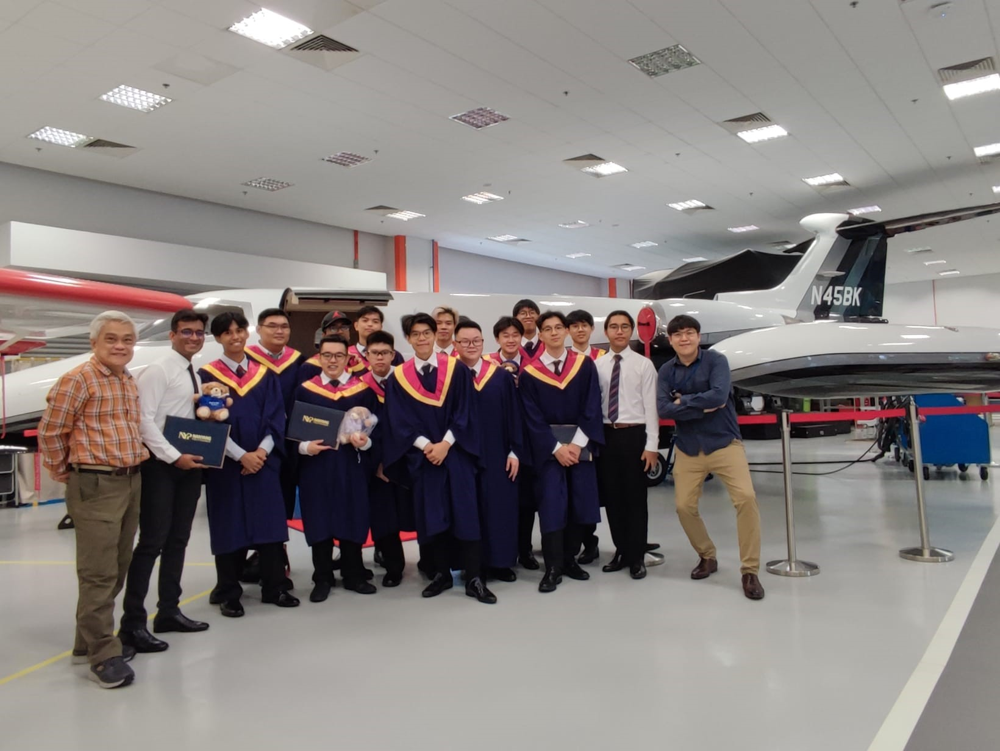
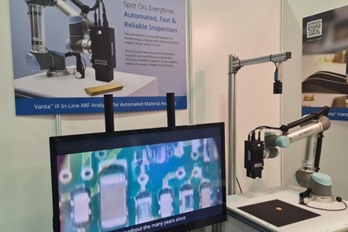

Building practical automation for real-world work.
I’m Sebastian, an automation engineer interested in robotics, machine vision, and thoughtful engineering design. I enjoy bringing hardware and software together to make complex tasks simpler.
Collaborative engineering, from first concept to finished system.
A little about me
Curious by nature. Practical by design.
I’m an aspiring automation engineer with a passion for design and technology. I’m interested in automating tasks and improving workflows, and I enjoy learning new tools to take on unfamiliar engineering challenges.
Through my engineering experience, I’ve developed skills in robotics, mechanical design, programming, and communicating technical ideas. I value collaborative work and like seeing a project come together across both hardware and software.

An important milestone in my engineering journey.
Selected work
Engineering projects
A selection of automation, robotics, and prototyping work I’ve contributed to.
01 / Robotics & machine vision
Robotic arm movement vision system
During my internship, I led the development of a robotic arm movement vision system designed to automate pick-and-place tasks. The concept brought together a Universal Robot arm, vision, and software, and was showcased at the 2022 Singapore International Jewelry Expo.
The project sparked my interest in automation: I enjoyed designing the system, building the hardware and software, and seeing the complete solution in action.
RoboticsMachine visionAutomation

02 / Prototyping & assistive technology
AI-assisted mobility hand
At the NTU Deep-Learning Week Hackathon in October 2022, my team created a proof-of-concept mobility hand with a vision system and voice-activated commands. The project explored how an assistive device could respond to its surroundings and to a user.
I focused on the mechanical components and 3D design, using Arduino and servo motors to control the hand. Working closely with teammates across different disciplines, we built a prototype together over three days.
3D designArduinoPrototyping
03 / Software & inspection
Automating the 38-link measurement workflow
I worked on automating a device used by engineering firms to measure material thickness for inspection. The existing process was labor-intensive, so we developed a software solution to reduce manual steps and save engineers time.
I also created a demonstration video to show the software and its benefits. The work gave me experience connecting a practical inspection need with a more efficient workflow.
SoftwareInspectionWorkflow automation
In motion
Project videos
Short clips from automation builds and project demonstrations.
Gold Bar Pick & Place
Jewelry Expo Automation
Project Completion
How I work
Engineering skills
3D design & mechanical systems
I use 3D design tools such as Inventor to develop components and support the mechanical side of automation projects.
Programming & integration
I enjoy connecting software, hardware, and microcontrollers such as Arduino and Raspberry Pi to build useful automated solutions.
Let’s build something useful.
Have an engineering project or opportunity in mind? I’d be glad to hear from you.